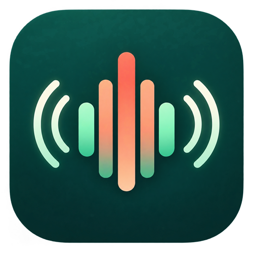

CEWIA Tech
CEWIA Tech
Decibelímetro Fácil
Nível sonoro estimado, privado e offline.
Sem gravação · Sem anúncios · Sem cadastroAcompanhe o ambiente
Veja a leitura estimada em decibéis, a faixa sonora, o gráfico recente e as estatísticas de média, mínimo e máximo da sessão.
Calibração opcional
Ajuste a leitura comparando o telefone com um instrumento de referência confiável. Microfones de smartphones variam entre modelos.
Processamento no aparelho
O microfone é usado apenas durante a medição. O áudio não é gravado, armazenado nem enviado, e o aplicativo não possui permissão de internet.
As leituras são estimativas para comparação cotidiana e não substituem instrumentos certificados para saúde ocupacional, segurança, fiscalização ou perícia.
Política de privacidadeEasy Sound Meter
Estimated sound level, private and offline.
No recording · No ads · No accountFollow your surroundings
See the estimated decibel reading, sound band, recent graph, and session average, minimum and maximum.
Optional calibration
Adjust the reading by comparing your phone with a reliable reference instrument. Smartphone microphones vary between models.
On-device processing
The microphone is used only while measuring. Audio is never recorded, stored or sent, and the app has no internet permission.
Readings are estimates for everyday comparison and do not replace certified instruments for occupational health, safety, enforcement or expert evidence.
Privacy policyDecibelímetro Fácil
Nivel sonoro estimado, privado y sin conexión.
Sin grabación · Sin anuncios · Sin registroObserva el ambiente
Consulta la lectura estimada en decibelios, la franja sonora, el gráfico reciente y el promedio, mínimo y máximo de la sesión.
Calibración opcional
Ajusta la lectura comparando el teléfono con un instrumento de referencia fiable. Los micrófonos varían entre modelos.
Procesamiento en el dispositivo
El micrófono se usa solo durante la medición. El audio nunca se graba, almacena ni envía, y la aplicación no tiene permiso de internet.
Las lecturas son estimaciones para comparaciones cotidianas y no sustituyen instrumentos certificados para salud laboral, seguridad, fiscalización o peritaje.
Política de privacidad